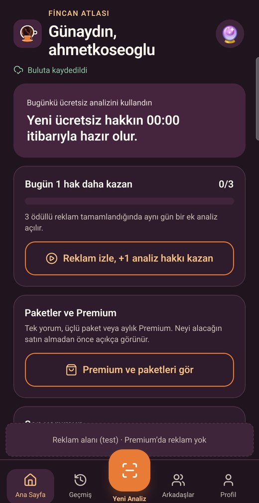
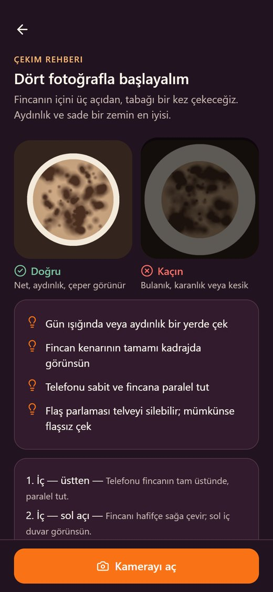
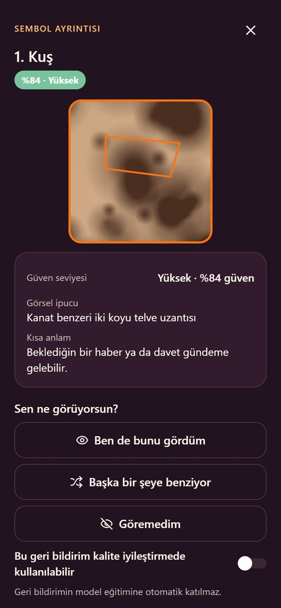

Nasıl çalışır?



Ne sunuyor?
Rehberli çekim
Fincanın içi üç açıdan, tabağı bir kez. Fotoğraf net değilse hemen söyler, hakkın gitmez.
İşaretli semboller
Kuş, yol, halka, kalp… Her sembolün fincanda nerede olduğunu ve ne kadar belirgin olduğunu gör.
Kısa ve tam yorum
Genel enerji, yakın dönem, ilişkiler, iş ve para — sade ve samimi bir dille.
WhatsApp'ta paylaş
Falını arkadaşlarına gönder; yalnızca seçtiğin bölümler görünür, linki istediğin an kaldırırsın.
Bulutta geçmiş
Telefon değişse de tüm yorumların hesabında kalır.
Önce gizlilik
Fotoğrafların herkese açık değildir; hiçbir yorum sen istemeden paylaşılmaz. Hesabını istediğin an silebilirsin.
Eğlence için
Fincan Atlası yorumları eğlence ve kişisel düşünme içindir; kesin bilgi, kehanet ya da uzman tavsiyesi değildir.